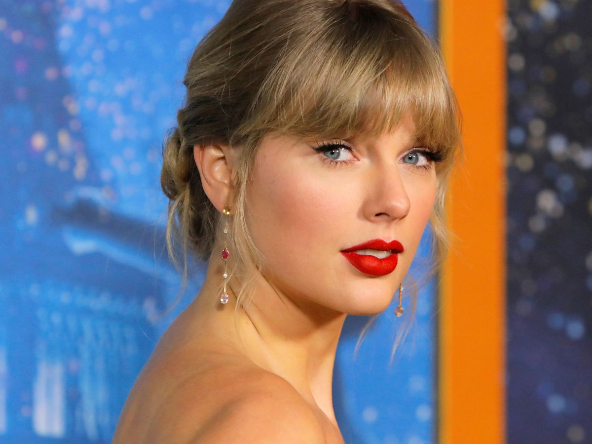

Taylor Swift es una cantante y compositora estadounidense. Es conocida por su inicio en la música country y transición al pop, ha sido una de las cantautoras más jóvenes en ser firmadas por una compañía disquera y una de las artistas con música más vendida de la industria. Taylor es una de las 100 personas más influyentes del mundo, título que ha cosechado con el gran éxito que ha tenido en cada una de sus canciones.
"Todo lo que tengo lo he logrado porque escribo canciones sobre mi vida, así que sería un poco injusto si me quejara".
"Una de las cosas más maravillosas de la música son los shows. Permanecen en la memoria de la gente para siempre y, de alguna manera, en sus vidas. Eso es un honor increíble que me tomo muy en serio. Intento ser recordada por algo bueno".
“Soy una persona que puede lograr muchas cosas, y quiero ser conocida por las cosas buenas que logre en mi vida.”
“¿Qué significa ser una mujer de esta década? Asi Inauguró la gala de los Billdboard Women in Music Awards con un discurso reivindicativo, en el que no olvidó recordar tanto su trayectoria profesional como su papel como mujer.
Taylor Swift es la artista femenina más escuchada en Spotify en 2021.Lidera el ránking con más de 2.300 millones en lo que llevamos de año, Taylor Swift. También la marca más alta en un día este año en la plataforma con 37.3 millones.
Taylor decide regrabar y lanzar sus seis primeros álbumes, hoy en manos de una compañía privada, es más que una venganza contra su exmánager. Con las nuevas versiones de su obra la artista tendrá el control total de ese material.
La discografía de Taylor Swift consiste en 9 álbumes de estudio, 17 extended plays, 2 regrabaciones, 2 álbumes en vivo, y más de cincuenta sencillos. Y con respecto a su filmografia, participo en 7 filmaciones, una de ellas fue en "Hannah Montana: The Movie".